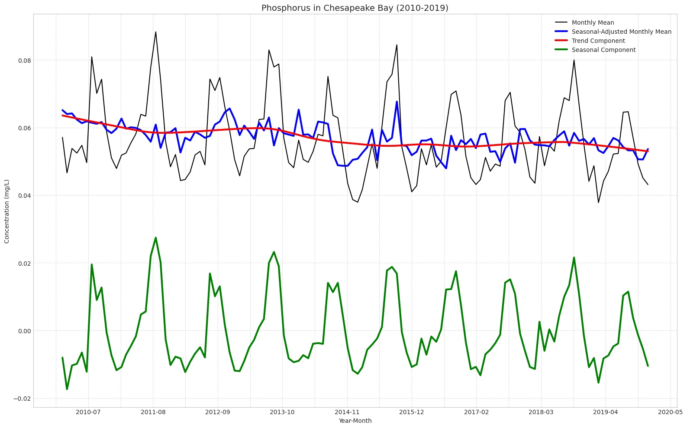

Time Series Visuals for Statistics Final Project
Context for plots: In this final project for my statistics course, I proposed statistical question on how nutrient concentrations have changed since Clean Water Act protection measures (implemented in 2010) and found appropriate data for answering the question (used over 43,000 samples from the Bay’s tidal regions). Specifically, I constructed two Seasonal-Trend using LOESS (STL) decomposition models to conduct time series analysis of nitrogen and phosphorus concentrations (selected length of seasons based on autocorrelation). For each pollutant, visualized model parameters comparatively. In addition, ran regressions to determine the proportion of variation attributable to seasonality and the 95% confidence interval for change in trend component over the 10-year period.

Caption: The trend component (red) indicates a slightly more pronounced downward trend (95% CI: -0.14% to -0.12% over 10-year time series) in comparison to nitrogen. Compared to nitrogen, there was also a more distinct seasonal component (green) for phosphorus concentrations (explains 87% of variation in monthly means). Unlike nitrogen, phosphorus concentrations shot up in the middle of the year around May, had a relatively flat peak lasting from June to August, and then shot back down at the end of the Summer.
Caption: Autocorrelation drops off after the t-24 time-lag, so I chose a seasonal period of 24 months for building my STL model.
Heatmap for Geospatial Analysis Project
Context for plot: For a project in my Geospatial Analysis class, I retrieved grid-cell data on Biodiversity Intactness Index (BII), a score rating an area of land’s biodiversity from 0 to 1, in the city of Phoenix, Arizona. The purpose of this analysis was to better understand 2020 biodiversity in Phoenix, as well as how biodiversity had changed since 2017.

Caption: The North East area of Phoenix and South Central Phoenix had the highest BII in 2020. In addition, some locations at the outer edges of these areas declined from being highly biodiverse (BII>0.75) in 2017 to being only moderately biodiverse (0.75>BII>0.5) in 2020 (these areas are shown in red).
Visuals for Ensemble Learning Project
Context for plots: In this ensemble learning project, I built three different models that predict Dissolved Inorganic Carbon (DIC) content in water samples off the coast of California. The features being used to make these predictions were other ocean chemistry measurements that were also measured during water sampling.
Caption: Based on this correlation heatmap, the variables Temperature_degC and R_Nuts were removed from the feature matrix due to high correlation with the target variable.
Caption: The most important feature for predicting DIC in the random forest model was Sulfur trioxide (SiO3) concentration, with a feature importance over 0.7. This was significantly higher than the second most important feature, Phosphate (PO3) concentration, which had a feature importance of close to 0.2. The third and fourth most important features, reported Oxygen concentration and Nitrate (NO3) concentration, only had a features importance of about 0.03.
Visuals for Deep Learning Project
Context for plots: In this personal project, I built and compared two deep learning models that predict phosphorus concentration in Chesapeake Bay tidal regions based on the time and location of sample. Specifically, my data includes 43,809 samples taken over 10 years (2010-2019) from 143 different monitoring stations across the tidal regions of the Chesapeake Bay.
Caption: From adding an additional 16-neuron dense layer with a ReLU activation function to our LSTM network architecture, we saw a 3.8% decrease in MAE and a 1.6% decrease in RMSE, suggesting that there are potential advantages from using a hybrid RNN-MLP model in this context. Based on these scatterplots of actual values and predicted values, it appears the reductions in MAE and RMSE can be attributed to enhanced outlier detection among actual concentration values >0.15 mg/L.
Citation
@online{ghanadan2024,
author = {Ghanadan, Linus},
title = {Visualization {Portfolio} {(Python)}},
date = {2024-07-23},
url = {https://linusghanadan.github.io/blog/2024-7-23-post/},
langid = {en}
}